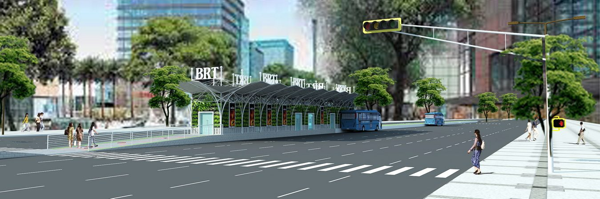
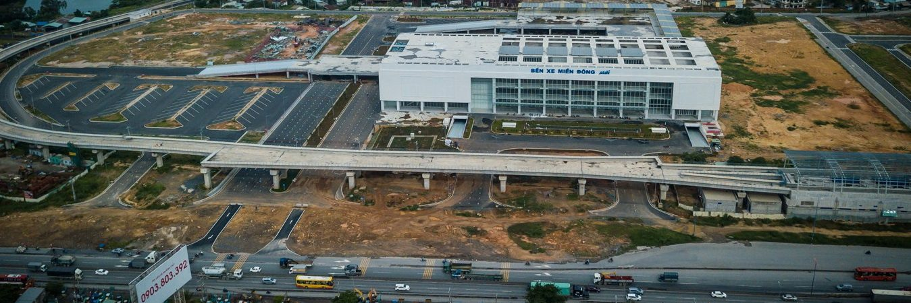
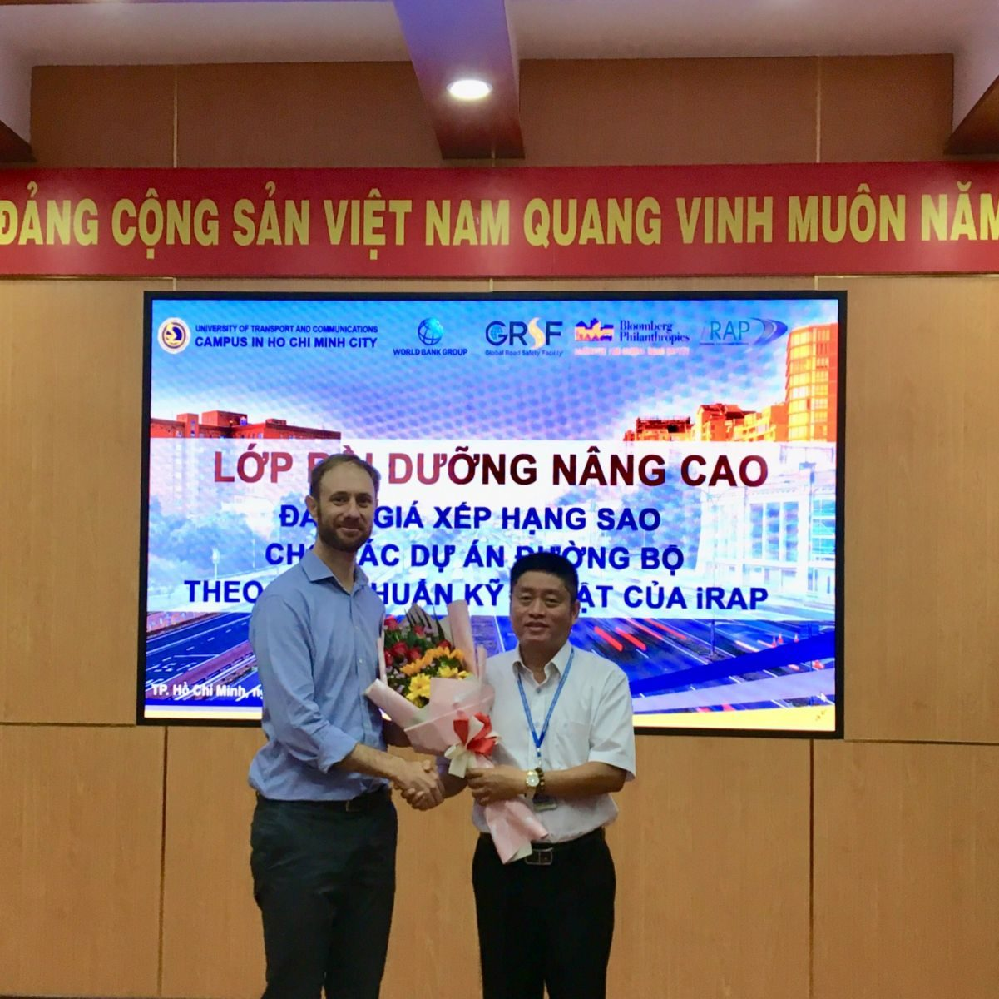
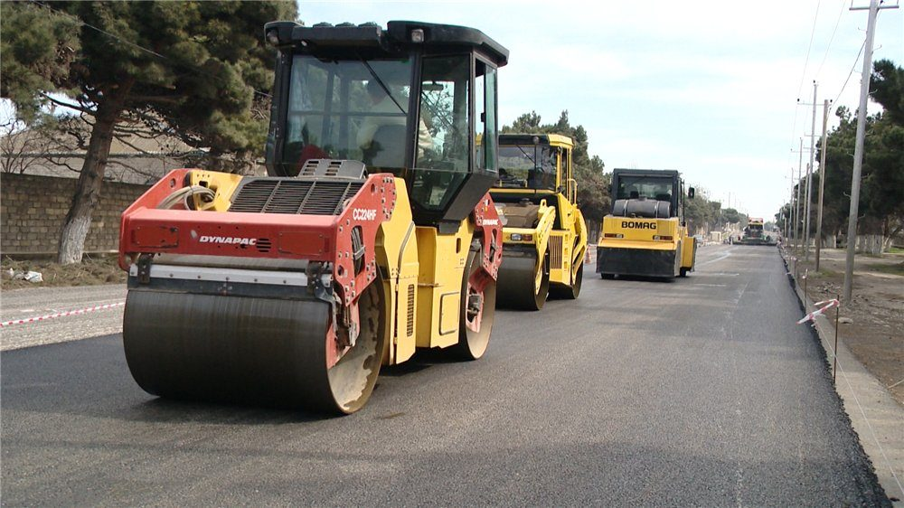

Tham gia khảo sát, thí nghiệm vật liệu phục vụ hạng mục san nền và hạ tầng kỹ thuật giai đoạn 1.
Xem chi tiết →
Thí nghiệm, kiểm định chất lượng vật liệu và cấu kiện cho các gói thầu thuộc tuyến cao tốc trọng điểm phía Nam.
Xem chi tiết →
Tư vấn giám sát và kiểm định chất lượng công trình bến xe lớn nhất cả nước tại TP. Thủ Đức.
Xem chi tiết →Nghiên cứu, lập quy hoạch mạng lưới giao thông đô thị khu vực phía Đông TP.HCM.
Xem chi tiết →
Phối hợp iRAP và Bloomberg Philanthropies đánh giá xếp hạng an toàn các tuyến đường tại Việt Nam.
Xem chi tiết →
Chương trình hợp tác nghiên cứu vật liệu và công nghệ xây dựng cùng Viện KICT – Hàn Quốc.
Xem chi tiết →Toàn bộ hồ sơ dự án, công trình đã thực hiện – chuyển từ website cũ.
Đang tải…